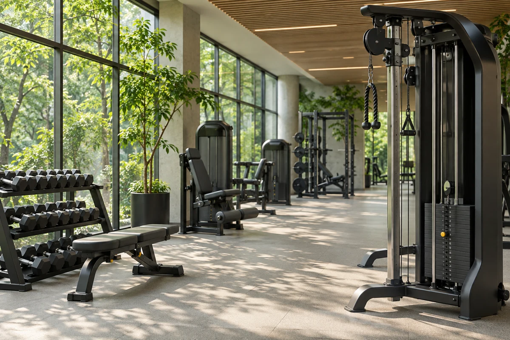

INCHEON NATIONAL UNIVERSITY
운동의 시작부터 올바른 사용법까지.인천대 학우들을 위한 체육관 가이드.

운영 시간과 수업 일정을 불러오는 중이에요.
이용 상태를 보려면 JavaScript를 켜 주세요.
기구별 사용법과 주요 운동 부위를 살펴보세요.
체육대학 수업과 이용 제한 시간을 확인하세요.
운동기구를 불러오는 중이에요.
운동기구를 보려면 JavaScript를 켜 주세요.